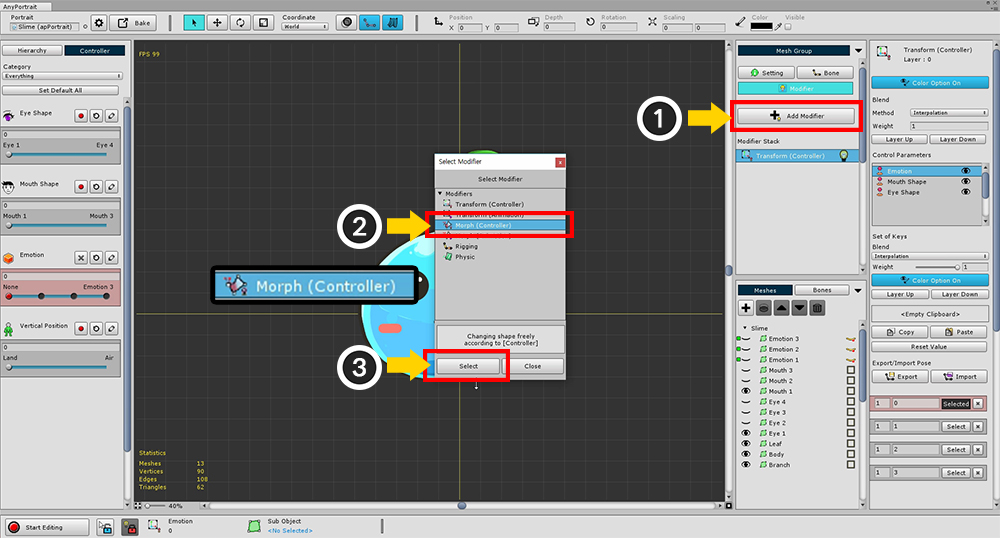
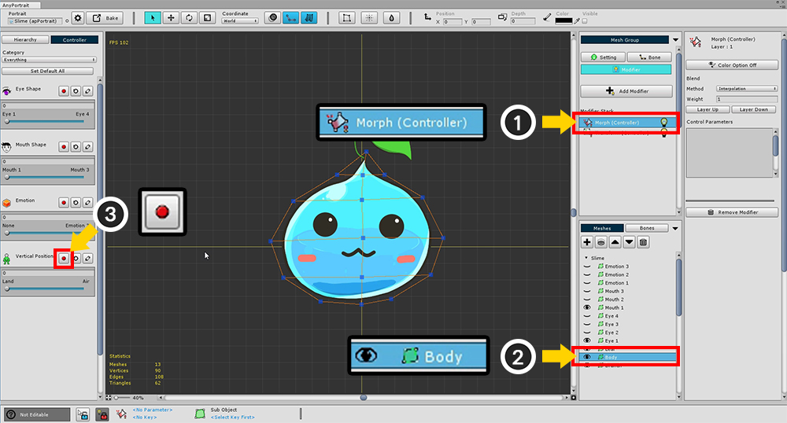
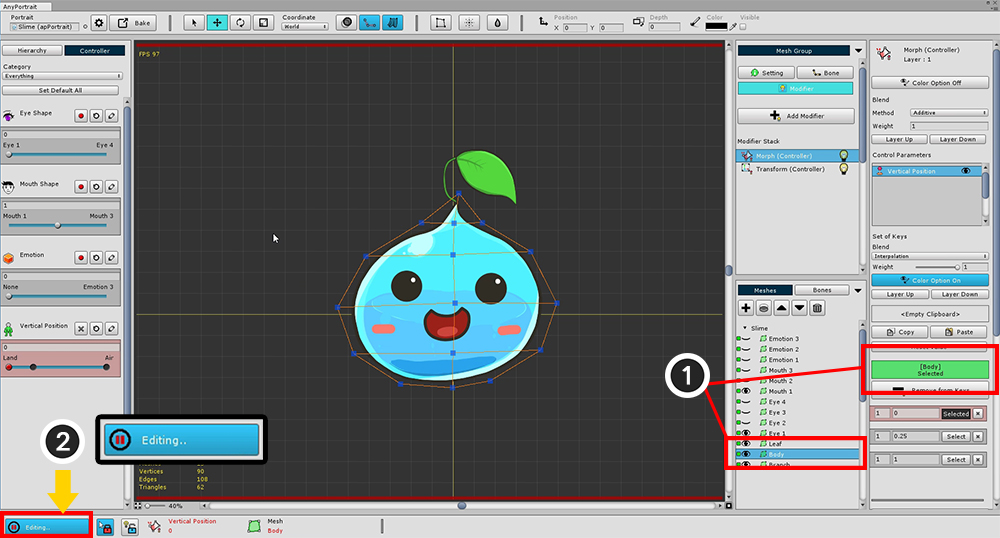
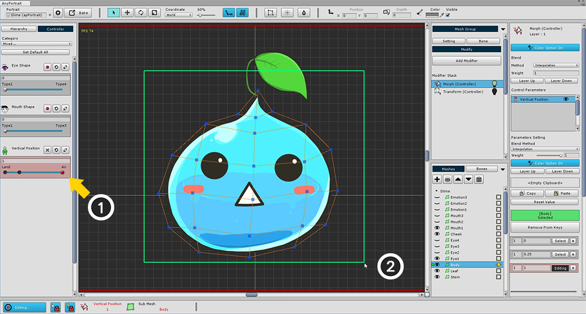

AnyPortrait > 시작하기 > 1.7. Morph 모디파이어 사용하기
1.7. Morph 모디파이어 사용하기
1.0.0
Morph 모디파이어는 버텍스를 직접 변형할 수 있는 기능을 제공합니다.
Transform 모디파이어보다 더 정밀한 작업을 할 수 있으며,
주로 일러스트의 외형을 조절하여 부피감을 주거나 생동감있게 만드는 역할을 합니다.
이 페이지에서는 Morph 모디파이어를 추가하여 기본적인 변형 과정을 해보는 내용을 담고 있습니다.
버텍스를 편집하기 위한 도구들을 확인하기 위해서는 다음 페이지로 넘어가시면 되겠습니다.

(1) Add Modifier 버튼을 눌러서 (2) "Morph (Controller)" 모디파이어를 선택하고 추가합니다.

Morph 모디파이어의 작업 화면은 Transform 모디파이어의 작업 화면과 크게 다르지 않습니다.
(1) Morph (Controller) 모디파이어를 선택한 뒤, (2) Body 메시를 선택합니다.
그리고 (3) Vertical Position 파라미터의 녹화 버튼을 누릅니다.

앞서 배웠던대로 컨트롤 파라미터에 키를 추가합니다.
Vertical Position 파라미터의 오른쪽은 "공중에 떠있는 슬라임"을 의미하고, 왼쪽은 "땅에 있는 슬라임"을 표현할 계획입니다.
각각 파라미터의 "0", "0.25", "1" 위치에 키를 추가합니다.

Morph를 적용하기 위해서는 버텍스를 선택하고 편집할 수 있어야 합니다.
현재 상태에서는 버텍스를 선택할 수도 없고 편집도 할 수 없습니다.
"Editing 상태" 에서만 편집이 가능하기 때문입니다.
편집을 하기 위해서는 (1) 대상이 되는 Body 메시가 등록되었는지 확인을 하고,
(2) Start Editing 버튼을 눌러서 "Editing 상태"로 만듭니다.
(다시 버튼을 누르면 "Editing 상태"가 해제됩니다.)

화면 아래쪽에는 "Editing 상태"와 관련된 UI가 배치되어 있습니다.
1. Editing 버튼 : Editing 상태를 On/Off 하는 버튼입니다. 편집이 불가능 하다면 자동으로 Off가 됩니다. 단축키는 A 입니다.
2. Selection Lock : On 상태에서는 작업 공간 상에서 다른 메시나 본 등을 선택할 수 없습니다. 단축키는 S 입니다.
3. Modifier Lock : On 상태에서는 작업 중인 모디파이어만 계산이 되고 나머지는 꺼지게 됩니다. Off 상태에서는 "충돌이 유발되지 않는 모디파이어"에 한해서 다같이 계산이 이루어집니다. 단축키는 D 입니다.
4. 선택된 입력값 : 현재 입력값으로 선택된 컨트롤 파라미터와 그 키값입니다. 모디파이어에 따라 대상이 바뀔 수 있습니다.
5. 선택된 객체 : 작업 대상이 되는 객체입니다. 여기서는 Body 메시가 해당됩니다.이제 본격적으로 버텍스를 변형하여 Morph 기능을 이용해보도록 하겠습니다.

(1) "공중에 떠있는 상태"에 해당하는 키로 슬라이더를 이동시킨 후에, (2) 마우스를 드래그하여 모든 버텍스를 선택합니다.

Move 툴 (단축키 W )등을 이용하여 버텍스들을 위쪽으로 이동시킵니다.

(1) 0.25 값을 가지는 키로 슬라이더를 옮긴 후에 (2) "납작해진 슬라임"을 만들어줍니다.
Move 툴과 Scale 툴을 이용하면 쉽게 만들 수 있습니다.
위 과정이 모두 끝났다면 아래의 영상처럼 슬라이더를 움직일 때마다 위아래로 올라갔다 내려오는 슬라임을 보실 수 있습니다.

이 샘플에서는 Morph 모디파이어가 색상을 제어하지 않습니다.
색상을 제어하지 않는 경우 설정에서 색상 설정(Color Option)을 꺼야 다른 모디파이어와 충돌이 나지 않습니다.
(1) Color Option 버튼을 눌러서 위 이미지처럼 Off 상태로 만듭니다.
(2) Blend Method를 덮어쓰기 보간 방식(Interpolation)이 아닌 더하기 방식(Additive)로 만듭니다.
여러 개의 모디파이어를 병합하는 경우 일반적으로 Additive 방식을 사용합니다.
Interpolation 방식을 선택하는 경우 값이 덮어 씌워지므로 특수한 경우에만 사용하도록 합시다.